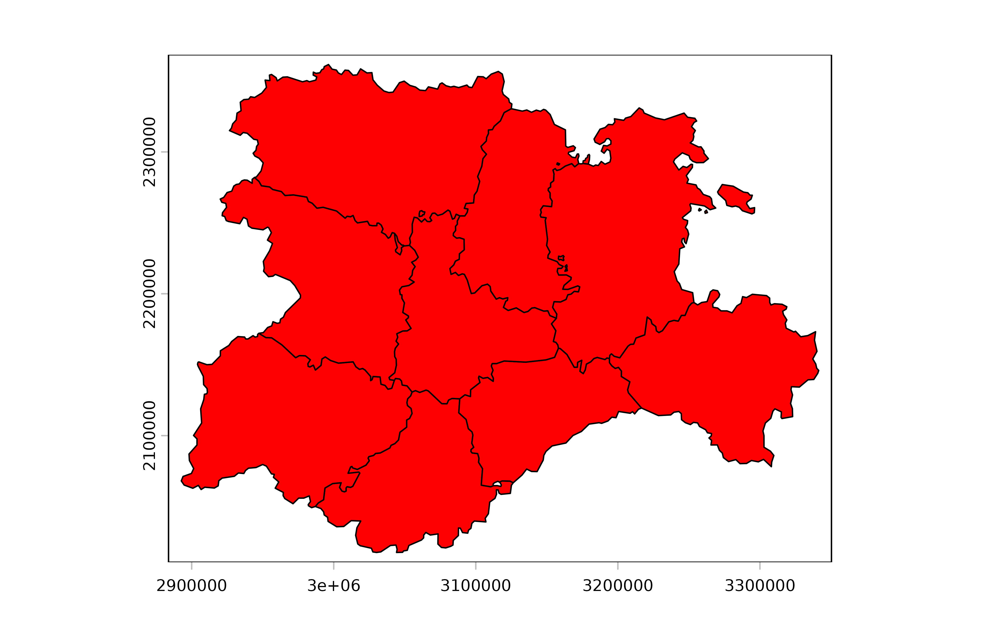
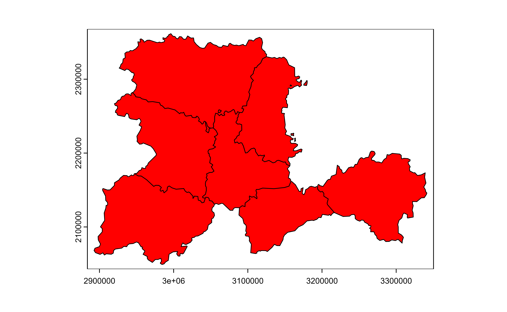
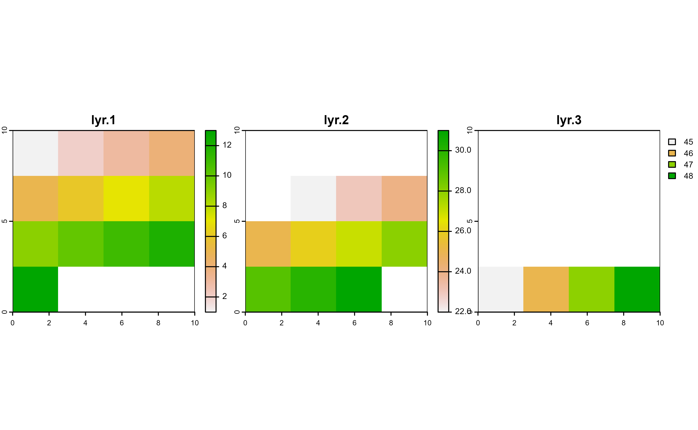
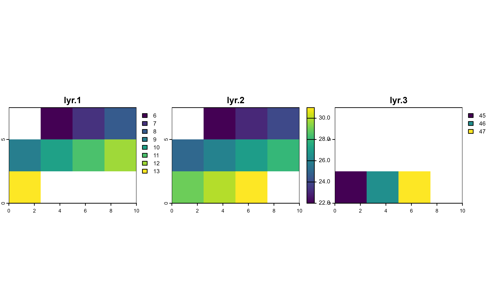
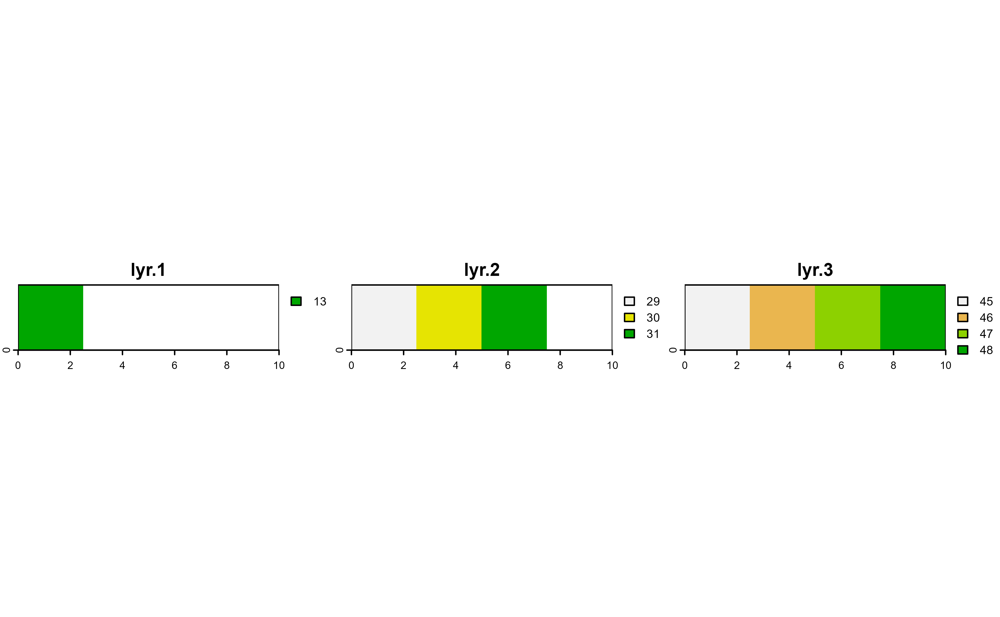
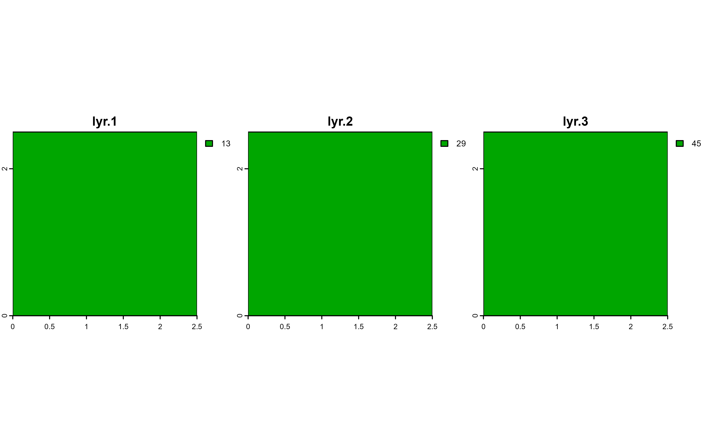

Arguments
- data
A
SpatVectorcreated withterra::vect()or aSpatRasterterra::rast().- ...
<
tidy-select> Attributes to inspect for missing values. If empty, all attributes are used.
terra equivalent
Methods
Implementation of the generic tidyr::drop_na() method.
SpatVector
The implementation of this method is performed on a by-attribute basis,
meaning that NAs are assessed on the attributes (columns) of each vector
(rows). The result is a SpatVector with potentially less geometries than
the input.
SpatRaster
Actual implementation of drop_na().SpatRaster can be understood as a
masking method based on the values of the layers (see terra::mask()).
SpatRaster layers are considered as columns and SpatRaster cells as rows,
so rows (cells) with any NA value on any layer would get a NA value. It
is possible also to mask the cells (rows) based on the values of specific
layers (columns).
drop_na() would effectively remove outer cells that are NA (see
terra::trim()), so the extent of the resulting object may differ of the
extent of the input (see terra::resample() for more info).
Check the Examples to have a better understanding of this method.
Feedback needed!
Visit https://github.com/dieghernan/tidyterra/issues. The implementation
of this method for SpatRaster may change in the future.
See also
Other tidyr verbs for handling missing values:
fill.SpatVector(),
replace_na.Spat
Other tidyr methods:
fill.SpatVector(),
pivot_longer.SpatVector(),
pivot_wider.SpatVector(),
replace_na.Spat
Examples
library(terra)
f <- system.file("extdata/cyl.gpkg", package = "tidyterra")
v <- terra::vect(f)
# Add NAs
v <- v |> mutate(iso2 = ifelse(cpro <= "09", NA, cpro))
# Init
plot(v, col = "red")

# Mask with lyr.1
v |>
drop_na(iso2) |>
plot(col = "red")

# SpatRaster method
# \donttest{
r <- rast(
crs = "EPSG:3857",
extent = c(0, 10, 0, 10),
nlyr = 3,
resolution = c(2.5, 2.5)
)
terra::values(r) <- seq_len(ncell(r) * nlyr(r))
# Add NAs
r[r > 13 & r < 22 | r > 31 & r < 45] <- NA
# Init
plot(r, nc = 3)

# Mask with lyr.1
r |>
drop_na(lyr.1) |>
plot(nc = 3)
# Mask with lyr.2
r |>
drop_na(lyr.2) |>
plot(nc = 3)

# Mask with lyr.3
r |>
drop_na(lyr.3) |>
plot(nc = 3)

# Auto-mask all layers
r |>
drop_na() |>
plot(nc = 3)

# }